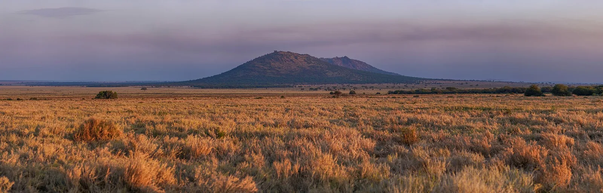
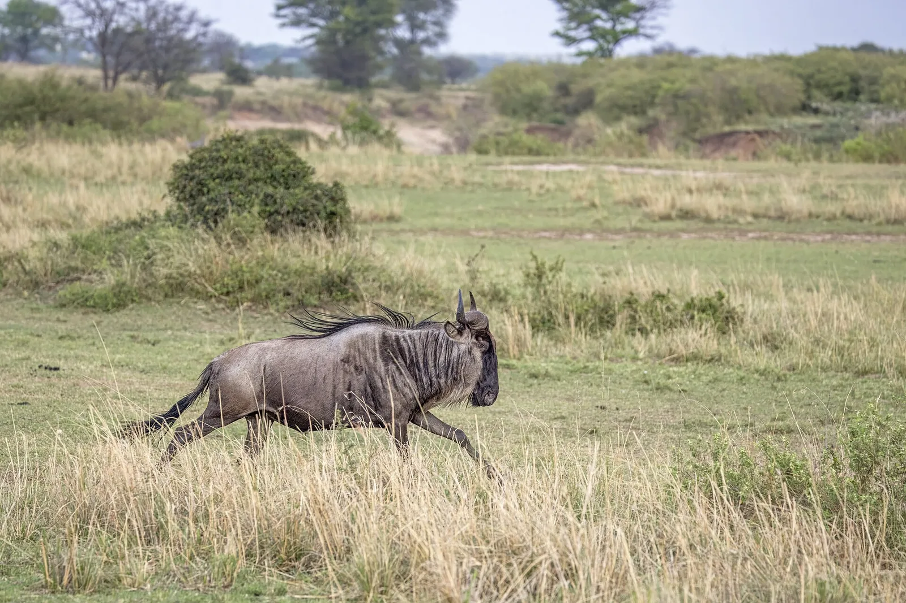
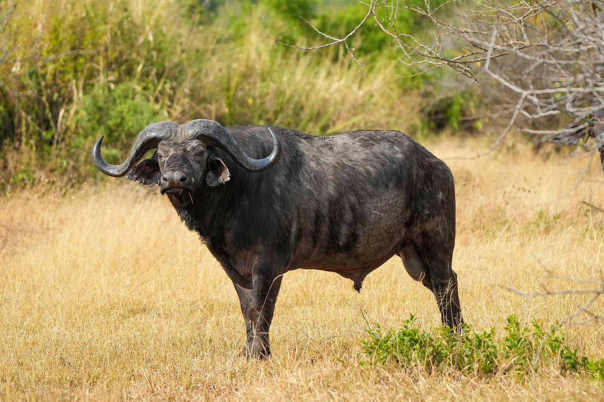

S11 · Sur
S11 · Süden
S11 · South
Serengueti
En el Serengueti vi un millón y medio de animales cruzar juntos la sabana. […] Escuché la risa de las hienas y el rugido del leopardo.
In der Serengeti sah ich anderthalb Millionen Tiere gemeinsam die Savanne überqueren. […] Ich hörte das Lachen der Hyänen und das Brüllen des Leoparden.
In the Serengeti I saw a million and a half animals crossing the savannah together. […] I heard the laughter of the hyenas and the roar of the leopard.
Información
El Parque Nacional Serengueti son 1,5 millones de hectáreas de sabana. Cada año, dos millones de ñus y cientos de miles de gacelas y cebras recorren un circuito de mil kilómetros buscando pasto y agua, seguidos por sus depredadores.
Es la mayor migración animal del mundo que sigue intacta, sin alterar.
La diversidad del parque es muy alta e incluye al menos cuatro especies amenazadas a escala global: el rinoceronte negro, el elefante, el licaón y el guepardo.
Information
El Parque Nacional Serengueti son 1,5 millones de hectáreas de sabana. Cada año, dos millones de ñus y cientos de miles de gacelas y cebras recorren un circuito de mil kilómetros buscando pasto y agua, seguidos por sus depredadores.
Es la mayor migración animal del mundo que sigue intacta, sin alterar.
La diversidad del parque es muy alta e incluye al menos cuatro especies amenazadas a escala global: el rinoceronte negro, el elefante, el licaón y el guepardo.
Information
El Parque Nacional Serengueti son 1,5 millones de hectáreas de sabana. Cada año, dos millones de ñus y cientos de miles de gacelas y cebras recorren un circuito de mil kilómetros buscando pasto y agua, seguidos por sus depredadores.
Es la mayor migración animal del mundo que sigue intacta, sin alterar.
La diversidad del parque es muy alta e incluye al menos cuatro especies amenazadas a escala global: el rinoceronte negro, el elefante, el licaón y el guepardo.
Vi que en veinticinco años se fue casi la mitad de los leones.
Ich sah, dass in fünfundzwanzig Jahren fast die Hälfte der Löwen verschwunden ist.
I saw that in twenty-five years almost half the lions were gone.
La Unión Internacional para la Conservación de la Naturaleza clasifica al león como vulnerable. La evaluación anterior estimó una caída de la población del 43 % en tres generaciones —unos veintiún años—, con variación según la región.
Hoy se calculan unos 23.000 individuos adultos, en descenso: eran unos 25.100 en 2018. El león desapareció de al menos el 92 % del territorio que ocupaba históricamente.
La Unión Internacional para la Conservación de la Naturaleza clasifica al león como vulnerable. La evaluación anterior estimó una caída de la población del 43 % en tres generaciones —unos veintiún años—, con variación según la región.
Hoy se calculan unos 23.000 individuos adultos, en descenso: eran unos 25.100 en 2018. El león desapareció de al menos el 92 % del territorio que ocupaba históricamente.
La Unión Internacional para la Conservación de la Naturaleza clasifica al león como vulnerable. La evaluación anterior estimó una caída de la población del 43 % en tres generaciones —unos veintiún años—, con variación según la región.
Hoy se calculan unos 23.000 individuos adultos, en descenso: eran unos 25.100 en 2018. El león desapareció de al menos el 92 % del territorio que ocupaba históricamente.
Galería
Galerie
Gallery



Fuentes
Quellen
Sources
- UNESCO, Centro del Patrimonio Mundial, Serengeti National Park — https://whc.unesco.org/en/list/156/ consultado 2026-10-05abgerufen 2026-10-05accessed 2026-10-05
- UICN, Lista Roja de Especies Amenazadas, Panthera leo (ficha de evaluación, PDF) — https://www.iucnredlist.org/species/pdf/231696234 consultado 2026-10-06abgerufen 2026-10-06accessed 2026-10-06
- PNAS, Lion (Panthera leo) populations are declining rapidly across Africa, except in intensively managed areas (doi:10.1073/pnas.1500664112) — https://www.pnas.org/doi/10.1073/pnas.1500664112 consultado 2026-10-06abgerufen 2026-10-06accessed 2026-10-06